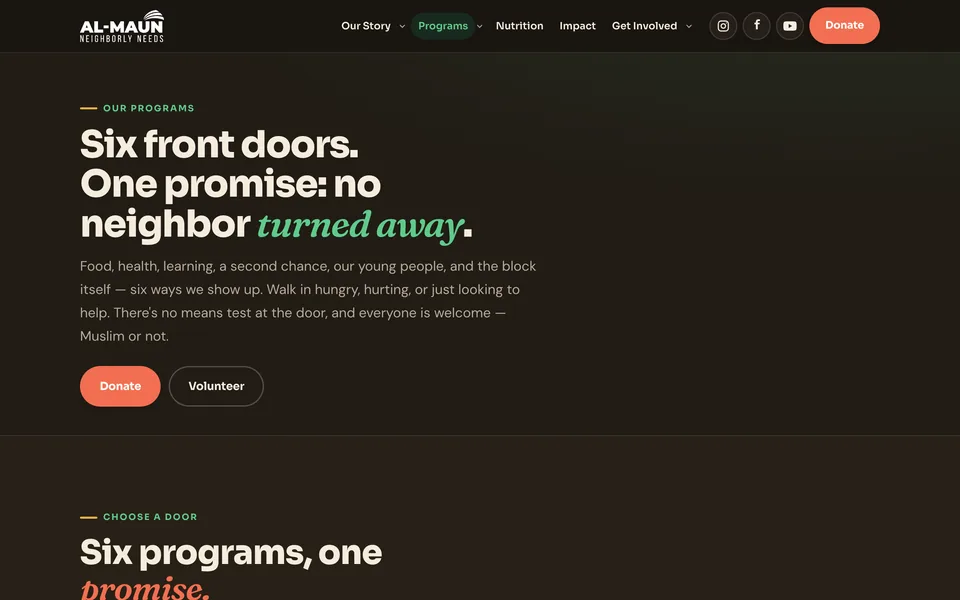
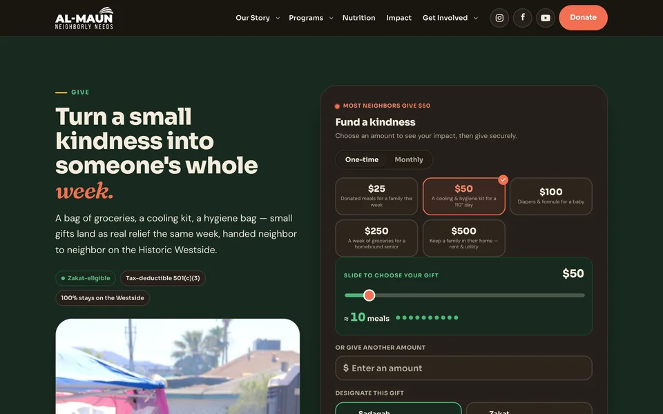

Case study · The Studio
Sixteen pages for Al-Maun Neighborly Needs.
The humanitarian arm of Masjid As-Sabur — the oldest masjid in Las Vegas — has fed, clothed, and stood beside the Historic Westside since 2003. The website was the only part of that work not pulling its weight.
We did not come to this one cold. Hamza has taught at Masjid As-Sabur.
- Client. Al-Maun Neighborly Needs, Las Vegas, Nevada
- Scope. A complete custom redesign — sixteen pages, migrated off Squarespace
- Rate. Built at the khidma rate — premium scope, community price, the difference given as sadaqah
- Status. Built, tested, and handed over. Go-live is the domain switch on their side

The gap
Twenty years of work, and a site that undersold all of it.
Al-Maun runs Humanitarian Day, a nutrition programme, youth work, re-entry support, and a weekend academy. Hundreds of people served, week after week, by volunteers.
The old site was rented, hard to change, and quietly under-converting the one action that funds all of it — giving. Nothing about it reflected how busy or how trusted this organisation actually is.
They did not need a brand. They needed the truth about themselves, published properly.
The decisions
The judgement calls, not the feature list.
Anyone can list "responsive design." These are the choices that actually decided how the project went.
-
01
We left the donations alone
Their giving already ran on a platform their donors recognise. Moving it would have made our project tidier and their December harder. It stayed exactly where it was, and the giving buttons were pointed at it so they survive the domain switch.
-
02
We threw out our own placeholder images
The first pass used AI-generated stand-ins for programme photography. They looked fine and they were false. Every one of them was replaced with real photographs of Al-Maun's own volunteers and neighbours before handoff.
-
03
We wrote a redirect for every old address
Twenty years of links live in emails, flyers, and search results. Each old page now has a permanent redirect to its new home, so nothing anyone has ever shared goes to a dead end.
-
04
We fact-checked the organisation against itself
Every detail on the new site was checked against the old one and against reality. The postcode on their live site was wrong. It is correct now. It is a small thing; small things are what trust is made of.
-
05
We wrote tests, because volunteers will edit this
An automated suite checks every page for load errors, broken links, mobile overflow, and missing search metadata. It runs on every change, so a well-meaning edit in two years cannot quietly break the giving page.
The build
Sixteen pages, all of them load-bearing.
Home · Our Story · Programs · NutriPass · Impact · Events & Prayer · Get Involved · Give · Contact · Survey · Youth Conference · In Memoriam · Directions · Privacy · Terms · Donor Policy.



- Light and dark themes, both designed, not inverted
- Real logo and a vector wordmark, drawn properly for the first time
- Contact, volunteer, RSVP, workshop, and survey forms all wired
- Search metadata, sitemap, and analytics ready to switch on at launch
- Accessible base: focus states, alt text, reduced-motion respected
Where it stands
Finished on our side. Live when they say go.
We could describe this project as "live" and most visitors would never check. It is not live yet, so we do not. What is done is done: the build, the content, the migration plan, the tests, the handover documentation. What remains is the last mile that only the client can walk — the domain switch and two account keys.
This page changes the day it goes live, and not before.
Why that matters to you
If we will not overstate a client's launch date to win your business, you can trust the rest of what we tell you: the price, the timeline, and whether we are the right people for your project at all.
It is the same reason none of our apps claim to be shipped. You can check.
Client voice
This is where the quote goes.
Every agency case study has a warm sentence in the client's voice. Ours does not yet, because Al-Maun has not given us one to publish.
We could write something plausible and attribute it to a board. Plenty of people do. The space stays empty until the words in it are theirs.
Reserved for Al-Maun Neighborly Needs.
Your turn
We would like to do this for your community.
Twenty minutes on a call, a fixed price in writing, and a site you own at the end.